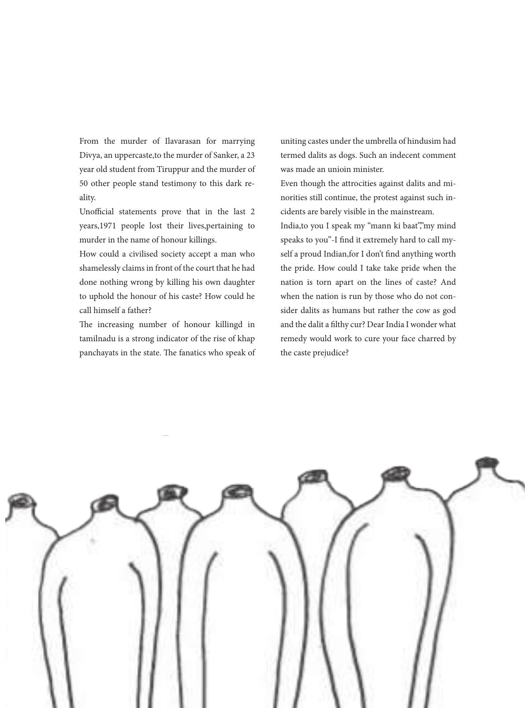

From the murder of Ilavarasan for marrying
Divya, an uppercaste,to the murder of Sanker, a 23
year old student from Tiruppur and the murder of
50 other people stand testimony to this dark re-
ality.
Unocial statements prove that in the last 2
years,1971 people lost their lives,pertaining to
murder in the name of honour killings.
How could a civilised society accept a man who
shamelessly claims in front of the court that he had
done nothing wrong by killing his own daughter
to uphold the honour of his caste? How could he
call himself a father?
e increasing number of honour killingd in
tamilnadu is a strong indicator of the rise of khap
panchayats in the state. e fanatics who speak of
uniting castes under the umbrella of hindusim had
termed dalits as dogs. Such an indecent comment
was made an unioin minister.
Even though the attrocities against dalits and mi-
norities still continue, the protest against such in-
cidents are barely visible in the mainstream.
India,to you I speak my “mann ki baat”,”my mind
speaks to you”-I nd it extremely hard to call my-
self a proud Indian,for I don’t nd anything worth
the pride. How could I take take pride when the
nation is torn apart on the lines of caste? And
when the nation is run by those who do not con-
sider dalits as humans but rather the cow as god
and the dalit a lthy cur? Dear India I wonder what
remedy would work to cure your face charred by
the caste prejudice?